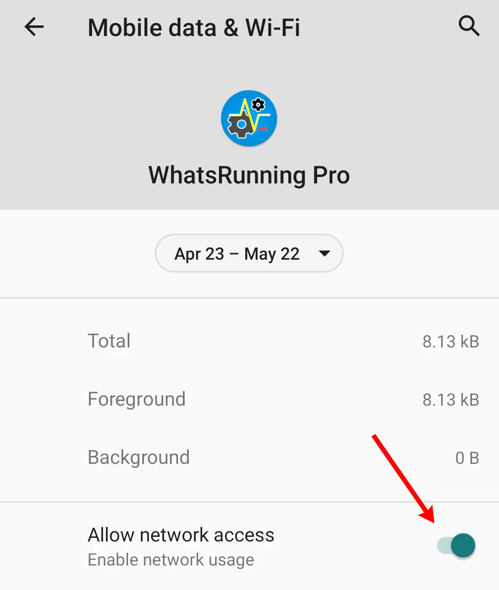
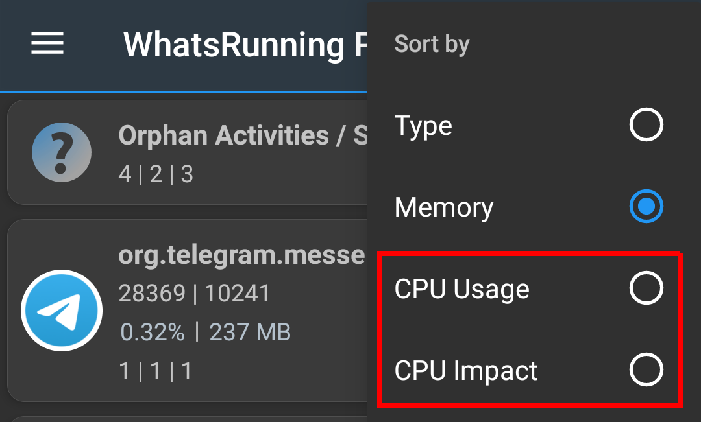
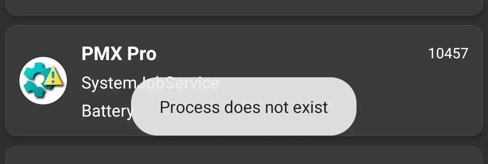

WhatsRunning FAQs
Why WhatsRunning requires root or ADB access?¶
Android intentionally limits apps' access to other processes for privacy and security. Because of those platform safeguards (which also restrict some process details even for an app's own process), WhatsRunning needs a small privileged helper to gather full process information.
Rather than bypassing the system from the app itself, WhatsRunning runs that helper as a separate, higher-privilege process. By default the helper runs under the ADB UID (2000) when started via ADB, or under the System UID (1000) on rooted devices. If you have a rooted device, you can change the helper's UID in Advanced Settings.
My device isn't rooted. How can I use WhatsRunning?¶
Use with ADB. Please do read the note at the start. There are some limitations; more on some devices, less on others.
Why WhatsRunning requires INTERNET permission?¶
The standalone Pro version requires internet connection for license verification. The other versions - Free and Play Store Pro - can work completely offline. Though Play Store app needs internet connection for license verification.
Optional use of android.permission.INTERNET permission:
- Check for app updates. You can disable this in app settings.
- Fetch help contents of this webpage that you view in drawer → Help.
Local (on-device) use of android.permission.INTERNET permission:
Android does not allow apps to create network sockets without having the INTERNET permission even if they are meant to be used only locally and not for an internet connection. WhatsRunning has two uses of local (on-device) connections (the ability to create localhost sockets at 127.0.0.1) for Inter Process Communication (IPC):
- WhatsRunning starts a background process with root / ADB privileges and talks to that process over network socket. After the initial handshake, both processes start talking over Binder. We have no better way to do this because Android doesn't allow apps to talk over UNIX domain sockets either.
- If your device is not rooted and you use WhatsRunning with ADB, then connecting to
adbdrequires internet permissions. See Is PMX spying on me using ADB over network?.
So if the app is unable to create or use local network sockets, it will fail. And if you want to stop WhatsRunning from using internet, it must not stop the app from talking to on-device processes over loopback interface for IPC. This is usually the case with iptables-based firewalls like Fyrypt and VPN based firewalls like NetGuard. But some ROMs have a built-in feature to disallow network access:

This not only prevents the app from using internet but also disables its ability to create loopback sockets for IPC. So WhatsRunning won't be able to get root / ADB privileges if this permission is denied.
How much privacy friendly WhatsRunning is?¶
We are not interested in you or your device at all. We do not spy on you. We do not collect your data in any way, not even the crash logs. We believe in our users being educated, well-informed, and in-charge of their privacy. WhatsRunning strengthens you to protect your privacy.
You may also want to see our Privacy Policy.
What are "Orphan Activities / Services"?¶
When an app is running in background and is not in active usage, the Android operating system may kill its native process at any stage e.g. to spare RAM or to preserve other resources. But its Activities (the visible part) and Services may still be kept in record so that to resume at a later stage. Such components are labeled as "orphan" in WhatsRunning.
What's the difference between "CPU Usage" and "CPU Impact" in sorting?¶
CPU Impact is simply the time a process spends while using the CPU. CPU Usage is the ratio of CPU time to the age of process.
For details see utime, stime and starttime fields under /proc/[PID]/stat in proc(5).

So the processes with high CPU Usage and long life, or the processes with high CPU impact and short life should be considered battery hogs.
These are just two different ways to analyze and identify the culprits.
In process detail, what does Input/Output figures show?¶

Please see Which Android app is killing the flash storage?
Why do I see "Process does not exist" toast?¶

It means that the process, or the app, or its component that you have tapped is not currently running, or is filtered out (in Process Filter).